Atendimento
Setor de Sinistros — atendimento de perda parcial: da abertura do primeiro contato até o pós-reparo, cadastro completo no Hinova, regulagem, acordo construtivo, negociação com oficinas e todos os e-mails padrão do dia a dia.
Script de Abertura e Franquia
Atendimento Perda Parcial
"Bom dia! / Boa tarde! Falo com o Sr (a) ...? Meu nome é .... falo do Setor de Sinistros da Mega. Meu contato é para passar o valor da franquia e o procedimento. No WhatsApp enviamos algumas perguntas que são pertinentes ao sinistro e a regulagem."
"O valor da sua franquia é de R$ XXXX,XX. Este valor pode ser pago no final dos reparos, diretamente na oficina ou na nossa matriz em até 10x com juros da bandeira do próprio cartão. Só não aceitamos o cartão Nubank."
"Nós enviaremos um e-mail para o senhor informando todo o procedimento e a documentação necessária. O processo é iniciado após o envio de toda a documentação completa. Lembrando que, a mesma, precisa estar sem erros, pois se trata de documentos oficiais e de suma importância para a entrada do procedimento."
"Neste e-mail contém 2 anexos. 1 formulário é para o senhor e 1 é para o terceiro. A documentação de ambos precisa estar totalmente completa e correta para podermos dar seguimento na abertura do processo. Qualquer dúvida que o Sr. tiver em relação ao procedimento, pode retornar o contato comigo."
Etapas e Prazos
- ● Análise inicial — até 5 dias úteis
- ● Análise mais apurada — 15 a 20 dias úteis (somente caso seja necessário)
- ● Regulagem inicial — até 5 dias úteis
- ● Negociação com as oficinas — até 7 dias úteis
- ● Autorização de reparos
- ● Remoção para oficina
O primeiro contato passa o valor da franquia, explica que o e-mail com o procedimento e os dois formulários (associado e terceiro) será enviado, e reforça que o processo só é aberto com documentação completa e sem erros.
Categorias de Veículo e Franquia
Veículo Passeio (Passageiro Automóvel) e Aplicativo (App)
- ● Acionando reparos para associado e terceiro gera valor de franquia única de acordo com a Tabela FIPE
- ● Se for somente para terceiro, NÃO gera valor de franquia
Veículo Especial e Diesel
- ● Acionando reparos para associado e terceiro gera valor de franquia única de acordo com a Tabela FIPE
- ● Se for somente para terceiro, gera valor de franquia de R$ 1.500,00 por cada terceiro
Moto
- ● Não possui acionamento para terceiro
- ● Valor de franquia de acordo com a Tabela FIPE
O que seria franquia
A franquia em seguros de carro é o valor que o segurado paga em caso de sinistro parcial para que a seguradora cubra o restante dos danos. Em outras palavras, é a participação obrigatória do segurado em caso de reparos no veículo.
Passeio/App: franquia única pela FIPE, sem franquia se for só pra terceiro. Especial/Diesel: franquia única pela FIPE, e R$ 1.500 por terceiro se for só pra terceiro. Moto: franquia pela FIPE, sem acionamento pra terceiro. Sempre checar o teto de cobertura de terceiro no SGA.
Recepção do Sinistro e Planilha de Atendimento
Precisamos saber qual é a franquia do segurado e a situação dele no sistema para seguirmos com o atendimento.
Normalmente, a solicitação do sinistro é recepcionada e posta na planilha de atendimento na vez da colaboradora que se tornará responsável por atender esse segurado. É recepcionado pelo e-mail da Assistência 24h, ou pelo WhatsApp, ou pelo chatbot.
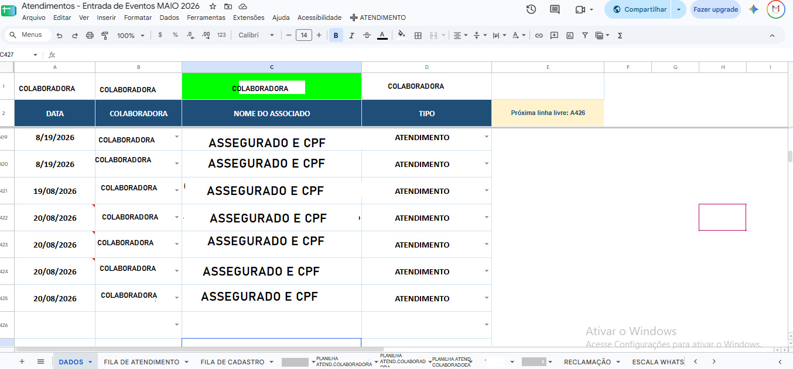
Essa planilha é seguida pela ordem da vez do atendimento, e a colaboradora fica demarcada em verde quando está na vez do atendimento.
- 1 Quem recepciona o sinistro coloca o nome do segurado, data do dia da recepção e seleciona atendimento.
- 2 Pesquisamos pelo sistema do Hinova jogando o CPF para acharmos o nome do assegurado.
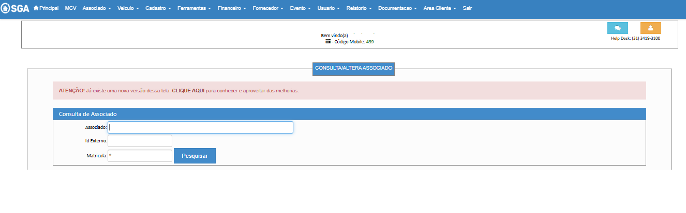
Todo sinistro recebido (e-mail da Assistência 24h, WhatsApp ou chatbot) entra na planilha de atendimento, seguindo a ordem da fila. A colaboradora da vez pesquisa o associado pelo CPF no Hinova.
Informações Básicas do Segurado
E depois seguimos para as informações básicas do segurado, como:
- ● Nome do segurado
- ● Placa do veículo
- ● Nome do veículo
- ● Tipo de veículo: se é passeio, app, especial, diesel leve, caminhão
- ● Se ele possui algum evento em aberto com menos de 12 meses para o veículo que está pedindo atendimento — caso possua, o valor de cota é duplicado
- ● Observamos se no tipo de veículo o segurado possui proteção para perda parcial — colisão, incêndio e eventos da natureza
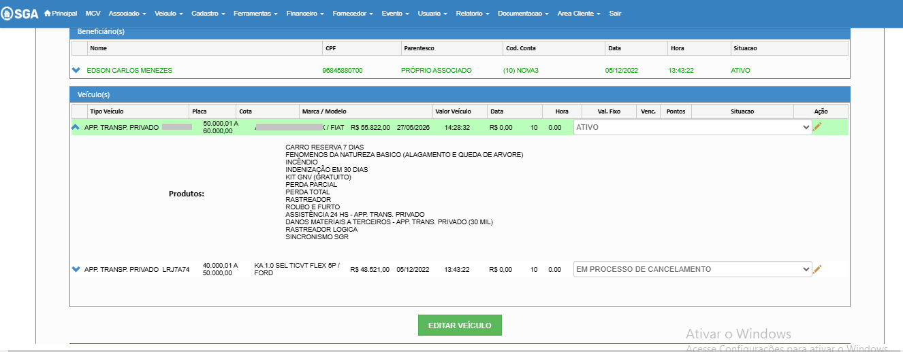
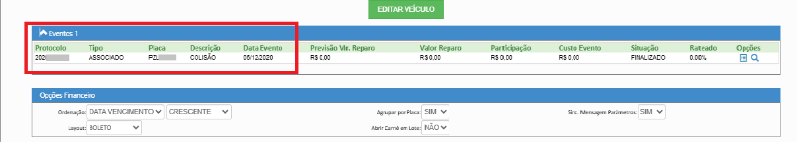
Antes de seguir, confirme nome, placa, tipo de veículo, se há evento aberto há menos de 12 meses (duplica a cota) e se a cobertura contratada cobre perda parcial para o tipo de evento em questão.
Consulta de Veículo e FIPE
Clicamos na placa do veículo do segurado duas vezes para abrir a aba de pesquisa onde verificamos:
- ● Data de contrato: data da adesão
- ● Ano modelo do veículo
- ● Categoria de tipo de veículo para verificarmos qual tabela FIPE se enquadra
- ● FIPE: valor precificado do veículo
- ● Valor de franquia: taxa que o segurado irá pagar para os reparos
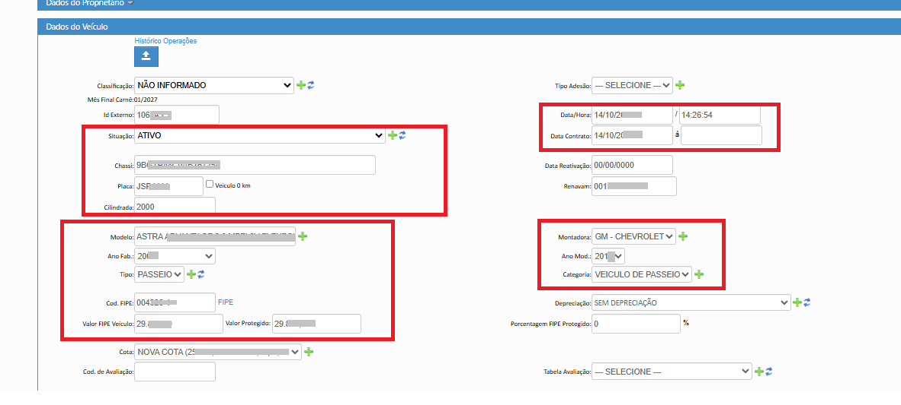
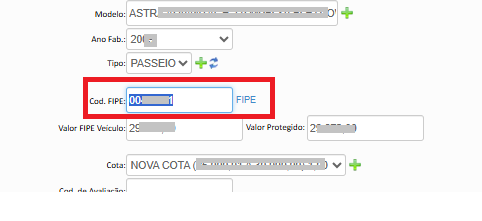
Copiamos o código FIPE, clicamos em FIPE que se encontra destacado em azul. Irá abrir a página de pesquisa de FIPE e selecionamos Pesquisa por Código FIPE, colamos o código e selecionamos a data de ano modelo. Abaixo irá abrir a aba com as informações do veículo.
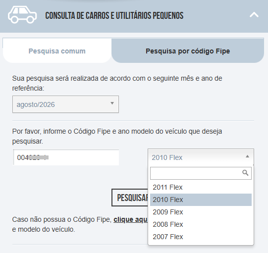
Depois de abrir a FIPE, verificamos o valor da franquia de acordo com a tabela FIPE vigente ao contrato. Necessário também verificar se o segurado recebeu notificação de reajuste de apólice para saber qual valor da franquia vigente.
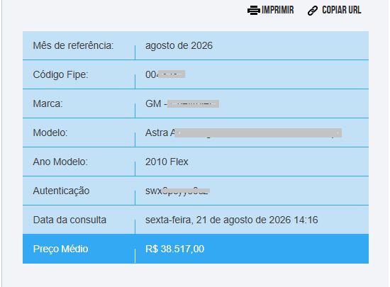
E alimentar a planilha de atendimento da colaboradora responsável, com as informações do segurado e veículo.
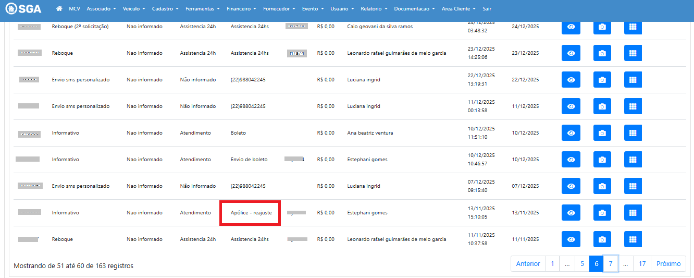
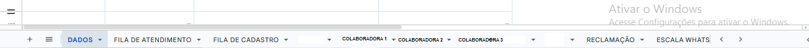
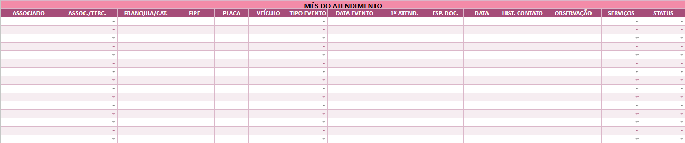
Consulta-se contrato, ano, categoria e código FIPE dentro do SGA; o código FIPE é usado no site da FIPE (pesquisa por código) para achar o valor do veículo e, com ele, o valor de franquia vigente — que é lançado na planilha de atendimento da colaboradora responsável.
Procedimento de Entrada por Tipo de Evento
Com todas as informações sobre o sinistro, se para: colisão, alagamento, incêndio, fenômeno da natureza, capotamento, ou fatos atípicos, outros... entramos em contato no WhatsApp para colher as informações.
Procedimento de Entrada de Colisão
"Para agilizar o atendimento, poderia nos dar algumas informações sobre o evento, por gentileza?"
- ● Data do ocorrido
- ● Horário
- ● Qual o percurso estava fazendo (de onde para onde)
- ● Qual o endereço exato da colisão
- ● Relato sobre como ocorreu o evento
- ● Quais os lados avariados do seu veículo?
- ● Se houve feridos
- ● Onde o veículo se encontra nesse momento?
- ● Me informe um e-mail de acesso, por favor
Procedimento para Incêndio
"Poderia nos dar algumas informações sobre o evento, por gentileza?"
- ● Data do ocorrido
- ● Horário
- ● Veículo ainda em chamas?
- ● Possui extintor de incêndio?
- ● Chamou bombeiro? — se teve bombeiros, será necessário o envio do Laudo
- ● Relato sobre como ocorreu o evento
- ● Um e-mail para contato
O procedimento de entrada de incêndio é enviado no e-mail de acordo com o procedimento já existente. Copiamos o exemplo (ver item 08).
Procedimento de Alagamento
"Poderia nos dar algumas informações sobre o evento, por gentileza?"
- ● Data do ocorrido
- ● Horário
- ● Relato sobre como ocorreu o evento
- ● Veículo estava parado?
- ● A água estava em qual altura?
- ● Tentou ligar o veículo? Orientamos a desconectar a bateria e não tentar ligar o carro para não agravar os danos.
- ● Se houve feridos
- ● Um e-mail para contato
Cada tipo de evento (colisão, incêndio, alagamento) tem seu próprio roteiro de perguntas pelo WhatsApp. Depois de qualquer oitiva, é obrigatório registrar tudo no histórico do Hinova, com o valor da franquia.
Registro de Histórico no Hinova
Clicamos em Histórico Atendimento, que irá abrir uma nova página para registrar o histórico, e clicamos em Novo.
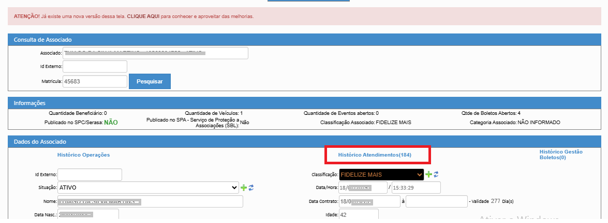
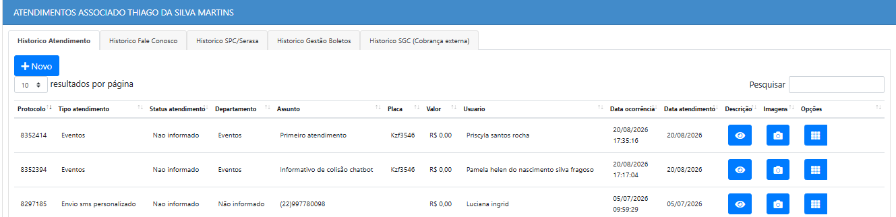
Irá abrir uma página para registrar Tipo de Atendimento, e preenchemos como Eventos e Departamento/Setor, como Eventos também. Em Assunto descrevemos como "Primeiro Contato — Oitiva e Valor de Franquia". E em Placa, selecionamos a placa que o segurado está pedindo atendimento.
Abaixo fazemos a descrição do sinistro, informamos o valor da franquia, copiamos a FIPE do site e colamos abaixo das informações do sinistro copiadas do WhatsApp.
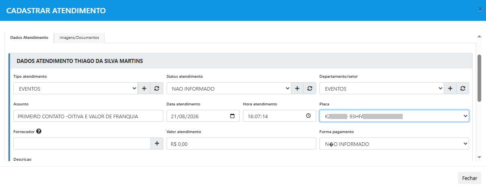
Todo primeiro contato vira um registro em Histórico Atendimento → Novo, tipo/departamento "Eventos", assunto "Primeiro Contato — Oitiva e Valor de Franquia", com a descrição do sinistro, valor de franquia e FIPE colados na descrição.
E-mails de Procedimento de Entrada
O procedimento de entrada de colisão é enviado no e-mail de acordo com o procedimento já existente.
Título: Mega Seguros - Procedimento de Entrada de Colisão
Copiamos o corpo do e-mail e acrescentamos o nome do segurado: "Prezado, Sr(a). XXXXXXX XXXXXXXX XXXXXXX. Conforme solicitado, segue abaixo a relação de documentos necessários para entrada de reparos (colisão). Obs: formulários em anexo. Enviar a documentação completa, correta e com fotos legíveis."
| Documentação do Associado | Documentação do Terceiro |
|---|---|
| CNH aberta do associado E/OU do condutor | E-brat deferido (arquivo completo) |
| CRLV aberto | CRLV aberto |
| Documento de identificação do proprietário do veículo | CNH aberta do condutor |
| E-brat deferido (arquivo completo) | Documento de identificação do proprietário do veículo |
| Fotos panorâmicas do veículo (todos os quatro lados) | Fotos panorâmicas do veículo (todos os quatro lados) |
| Formulários Mega (Aviso de Evento de Associado) | Formulários Mega (Aviso de Evento de Terceiro) |
| Carta próprio punho (se passar de 15 dias, justificando a demora) | Carta próprio punho (se passar de 15 dias, justificando a demora) |
| BAM — caso a vítima tenha sido levada para o hospital | BAM — caso a vítima tenha sido levada para o hospital |
Caso o veículo esteja na garantia
- ● Nota fiscal da compra do veículo
- ● Manual de garantia
- ● Revisões
- ● Foto do painel ligado do veículo
Depois de montar o e-mail, anexa o formulário para preenchimento, anexando o de terceiro caso acione para o mesmo. Retorna o contato com o associado pelo WhatsApp: "Seguiu para email: MEGA ASSOCIAÇÃO - PROCEDIMENTO DE ENTRADA DE COLISÃO", para que o assegurado possa verificar os documentos e nos enviar por esse mesmo e-mail.
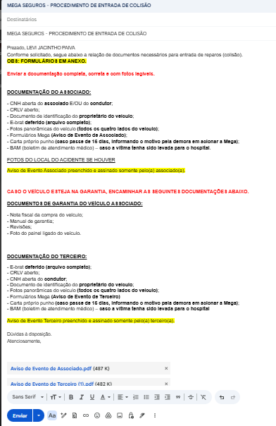
Título: Mega Seguros - Procedimento para Entrada de Incêndio
- ● Cópia da CNH associado/condutor
- ● Cópia do CRLV
- ● Laudo dos bombeiros (caso o bombeiro tenha ido até o local)
- ● Carta a próprio punho com firma reconhecida por autenticidade (modelo em anexo — entregar original na matriz)
- ● Imagens do veículo avariado (todos os lados e da parte avariada)
- ● Cópia do contrato Mega (se possível)
- ● Cópia dos 3 últimos boletos pagos (se possível)
- ● Fotos do veículo do associado / fotos do local do acidente se houver
- ● Aviso de Evento Associado (anexo) preenchido e assinado somente pelo(a) associado(a)
| Prazo | Duração |
|---|---|
| Análise inicial | 5 a 7 dias úteis |
| Regulagem inicial | 5 a 7 dias úteis |
| Perícia técnica | 15 a 20 dias úteis |
| Remoção para oficina | 5 a 7 dias úteis |
| Autorização de reparos | 5 a 7 dias úteis |
| Endereço para envio | Mega Associação de Benefícios (apenas para o associado) — Avenida Brigadeiro Lima e Silva, nº 856 — 25071-182 — 25 de Agosto — Duque de Caxias |
| Atendimento | Na matriz, somente para o associado(a) |
| Horários | 08:00 às 17:30 (segunda a quinta) · 09:00 às 17:30 (sexta) · 08:00 às 12:30 (sábados) |
Anexa o formulário e a carta a próprio punho para preenchimento e envia no e-mail informado pelo assegurado. Retorna o contato pelo WhatsApp: "Seguiu para email: MEGA ASSOCIAÇÃO - PROCEDIMENTO PARA ENTRADA DE INCÊNDIO".
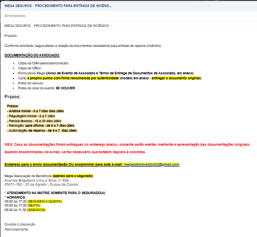
Título: Mega Seguros - Procedimento para Entrada de Alagamento
- ● Cópia da CNH associado/condutor
- ● Cópia do CRLV
- ● Formulários Mega (Aviso de Evento de Associado e Termo de Entrega de Documentos de Associado, em anexo)
- ● Carta a próprio punho com firma reconhecida por autenticidade (modelo em anexo — entregar o documento original)
- ● Fotos do veículo
- ● Fotos do local do evento se houver
| Endereço/e-mail | Mega Associação de Benefícios (apenas para o segurado) — Avenida Brigadeiro Lima e Silva, nº 856 — 25071-182 — 25 de Agosto — Duque de Caxias, ou megasetoreventos02@gmail.com |
| Horários | 08:00 às 17:30 (segunda a quinta) · 09:00 às 17:30 (sexta) · 08:00 às 11:30 (sábados) |
Retorna o contato pelo WhatsApp: "Seguiu para email: MEGA ASSOCIAÇÃO - PROCEDIMENTO PARA ENTRADA DE ALAGAMENTO".
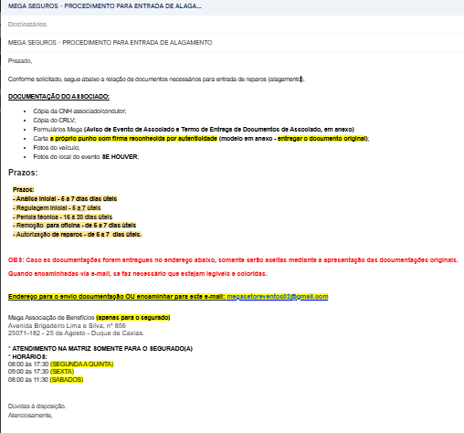
Cada tipo de evento tem um e-mail modelo próprio (colisão, incêndio, alagamento), com sua lista de documentos, prazos e endereço de entrega — sempre reforçando pelo WhatsApp que o e-mail foi enviado.
Cadastro de Comunicação de Evento
Após todo atendimento e recepção de informações na oitiva, fazemos o cadastro da comunicação de evento desse sinistro. Precisamos da data e horário que ocorreu, data e horário da comunicação de sinistro e cadastrar como pendente até que o segurado envie todas as documentações para cadastro completo.
- 1 No sistema do SGA/Hinova, depois de acessar, pesquisar pelo CPF o segurado. Copio a placa para a qual o segurado deseja atendimento, clico com o botão esquerdo e duplico a página.
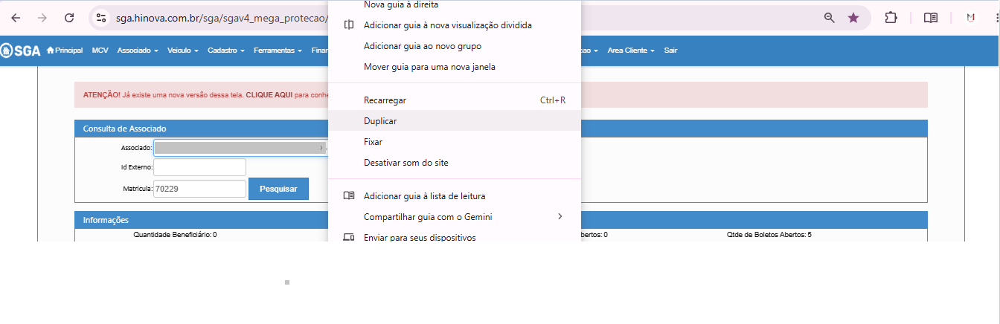
- 2 Clico na aba Eventos e depois em Cadastrar Evento (9.2)
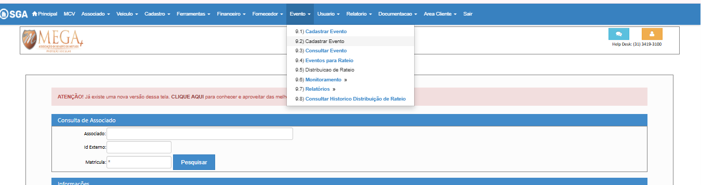
- 3 Uma nova página irá abrir com a opção de Buscar Veículo — colo a placa copiada e espero ela aparecer para clicar no botão azul Pesquisar
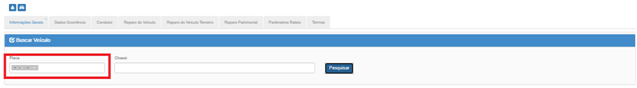
Irá abrir uma aba abaixo com as opções Motivo/Envolvimento/Data:
- 3.1 Selecione o motivo, se: Comunicação de Eventos
- 3.2 Selecione o motivo, se: Causador ou Vítima
- 3.3 Preencha: Data e hora do evento
- 3.4 Preencha: Data e hora da comunicação do evento
- 3.5 E por último, clicar em Cadastrar Informações Gerais
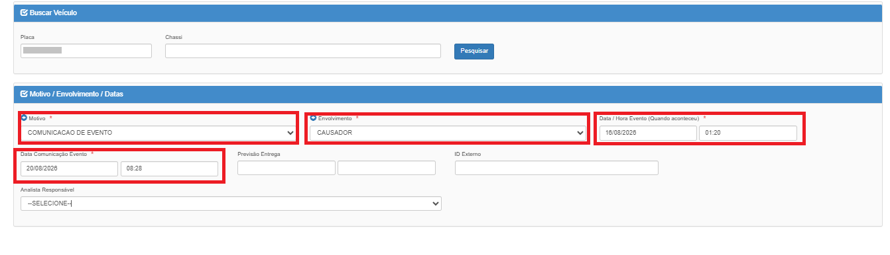
- 4 Depois, abrir a aba Reparo do Veículo: em Situação do Reparo do Veículo, no ícone da situação do item, clico na seta para selecionar o motivo do cadastro e clico em Pendente ou Cancelou os Reparos/Finalizou, caso o segurado não queira seguir com os reparos
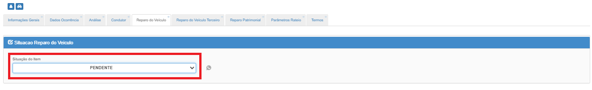
Após verificar todas as informações e dar continuidade ao atendimento do segurado e/ou terceiro, solicitar as informações para ser feito o agendamento da regulagem.
A comunicação de evento é cadastrada logo após a oitiva: busca o veículo pela placa, define motivo/envolvimento/datas, e marca o reparo como Pendente até chegar toda a documentação — preparando o terreno para a regulagem.
Solicitação de Regulagem
Enviar no WhatsApp
"Preciso de algumas informações para que eu possa estar solicitando a regulagem do seu veículo. Que é quando o perito vai fazer uma vistoria no seu veículo. Estarei solicitando a regulagem. O perito estará entrando em contato para agendar."
- ● Qual o endereço que seu veículo se encontra com CEP e bairro?
- ● Nos envie as fotos do seu veículo com as partes avariadas
- ● Nos envie um vídeo do veículo e local do acidente
- ● Nos envie o CRLV do veículo
- ● Me confirme seu contato
- ● Quem estará no local para receber o regulador? Me confirme o contato e nome
Como montar o e-mail (associado)
Título: "MEGA ASSOCIAÇÃO // SOLICITAÇÃO DE REGULAGEM // ASSOCIADO: XXXXXX XXXXX XXXXXX// VEÍCULO: XXXXXXXXXXXX// PLACA: XXXXXXXXXXXXXX// COR: XXXXXXX// ANO: XXXX/XXXXXXXXXX"
"Bom dia / Boa tarde! Solicito que seja feito a REGULAGEM no veículo supracitado abaixo. VALOR DE FRANQUIA: R$ XXXX,XX // APENAS PARA TERCEIRO. ENDEREÇO: XXXXXXXXXXXXX, N° XXXX - BAIRRO: XXXXXXXXXXXXX. CEP: XXXXX-XXX. CONTATO: (XX) XXXXXXX-XXX (nome de quem irá receber o regulador)."
Relato do segurado: XXXXXXXXXXXXXXXXXXXXXXXXXXXXXXXXXXXXXXXXXX
Avarias: XXXXXXXXXXXXXXXXXXXXXXXXXXXXXXXXXXXXXXXXXXXXXXX
Regulagem do terceiro
Título: "MEGA SEGUROS // SOLICITAÇÃO DE REGULAGEM // TERCEIRO: XXXXXXXX XXXXXX XXXXX (3° XXXXXX XXXXX) // VEÍCULO: XXXXXXXXX // PLACA: XXXXXXX // COR: XXXXX // ANO: XXXX/XXXX"
"Boa tarde! / Bom dia! Solicito que seja feito a REGULAGEM no veículo supracitado abaixo. TRATA-SE DE TERCEIRO. ENENDEREÇO: XXXXXXX XXXXX, N° XXX, BAIRRO: XXXXXXXXXXXX. CEP: XXXXX-XXX. CONTATO: (XX) XXXXX-XXXX (quem irá receber)."
Relato do segurado: XXXXXXXXXXXXXXXXXXXXXXXXXXXXXXXXXXXXXXXXXXX
Avarias: XXXXXXXXXXXXXXXXXXXXXXXXXXXXXXXXXXXXXXXXXXXXXXXX
Relato do terceiro: XXXXXXXXXXXXXXXXXXXXXXXXXXXXXXXXXXXXXXXXXXXX
Avarias: XXXXXXXXXXXXXXXXXXXXXXXXXXXXXXXXXXXXXXXXXXXXXXXXXXX
Após montar a regulagem, observar a planilha de agendamento para ser preenchida: associado/terceiro, veículo e placa, cor e ano, data de envio e tipo de evento.
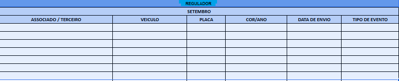
A regulagem é solicitada por e-mail (modelo próprio para associado e para terceiro), sempre com endereço, contato de quem recebe, relato e avarias, anexando fotos, vídeo, CRLV e FIPE — e registrada na planilha do regulador.
Cadastro do Sinistro no Hinova — Passo a Passo Completo
- 1 No sistema do SGA/Hinova, pesquisar pelo CPF o associado. Copio a placa para a qual o associado deseja atendimento, duplico a página, clico na aba Eventos e depois em Cadastrar Evento (9.2)
- 2 Uma nova página irá abrir com a opção de Buscar Veículo — colo a placa copiada e espero ela aparecer para clicar no botão azul Pesquisar
- 3 Irá abrir uma aba abaixo com as opções Motivo/Envolvimento/Data
- 3.1 Selecione o motivo, se: Colisão, Incêndio, Alagamento, Fato Atípico ou apenas Registrar Comunicação de Eventos
- 3.2 Selecione o motivo, se: Causador ou Vítima
- 3.3 Preencha: Data e hora do evento
- 3.4 Preencha: Data e hora da comunicação do evento
- 3.5 E por último, clicar em Cadastrar Informações Gerais
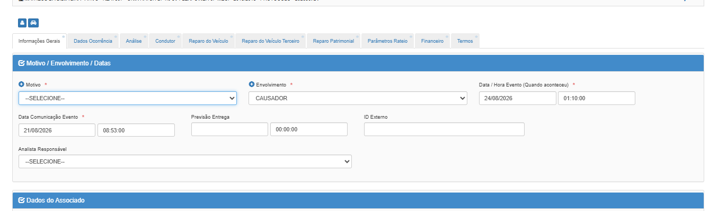
- 4 Após, clico na aba Dados da Ocorrência e preencho com a numeração do BRAT/DAT/Registro de Ocorrência (R.O)/Laudo do Bombeiro
- 4.1 Preencho data/hora do registro de ocorrência (R.O)
- 4.2 Preencher se houve vítimas — sempre SIM
- 4.3 Em descrição do B.O: preencho com a informação do sinistro no BRAT/DAT/R.O/Laudo do Bombeiro/Carta a Próprio Punho
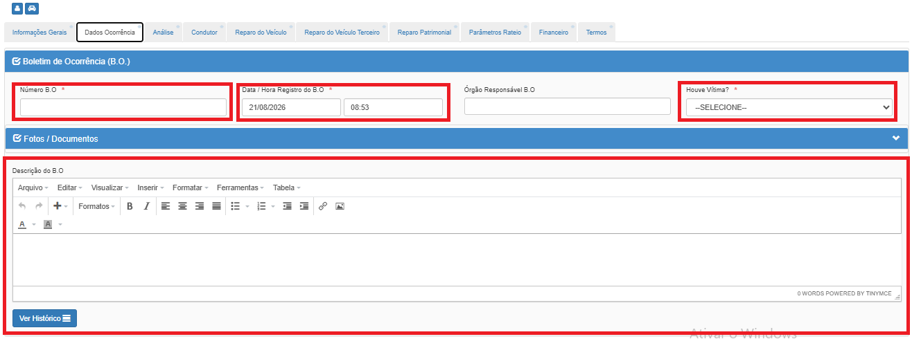
- 4.4 Local do evento: preencher com CEP, logradouro e número, bairro, complemento se houver, cidade e selecionar o estado, e marcar se local do acidente é sinalizado e descrever qual é a sinalização
- 4.5 Descrição do evento para área de associado: preencher com a descrição do aviso de evento, e clicar em Cadastrar os Dados da Ocorrência
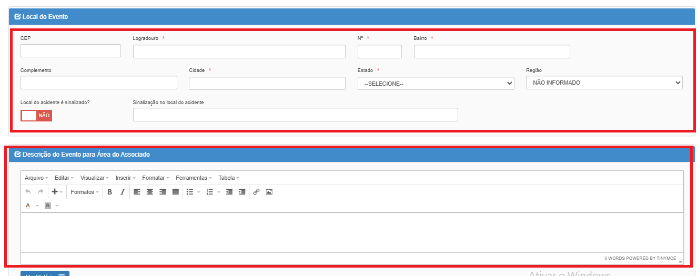
- 5 Dados do condutor: quem conduzia o veículo, selecionar sempre Associado mesmo que ele não seja o condutor, e clicar em Vincular o Condutor ao Evento
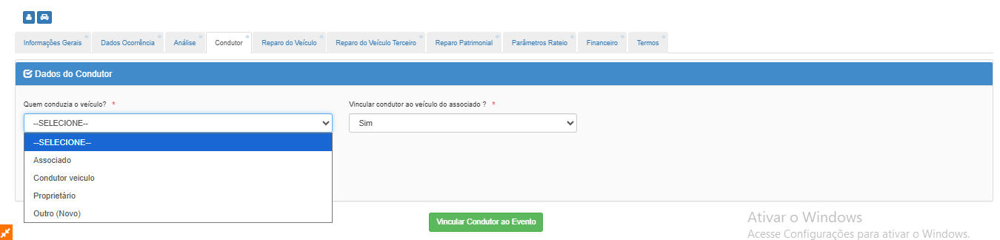
- 6 Aba Reparo do Veículo: em Situação do Reparo do Veículo, no ícone da situação do item, clico na seta para selecionar qual é o estado desse processo, se: Aberto Aguardando Análise / Em Andamento / Acordo Financeiro / Em Negociação de Orçamento / Pendente, Regulagem / Cancelado/Finalizado, etc.
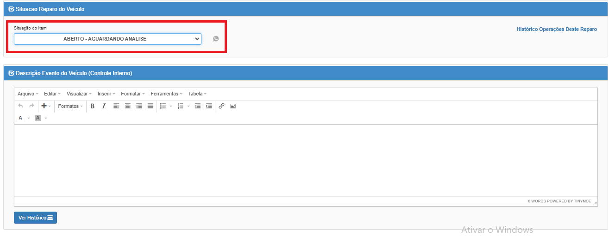
- 6.2 Reparo do veículo: em Vistoriador, clicar no ícone e selecionar Consultores Mega, e em Oficina escrever "Mega" e selecionar Mega Mais Associação de Benefícios Mútuos
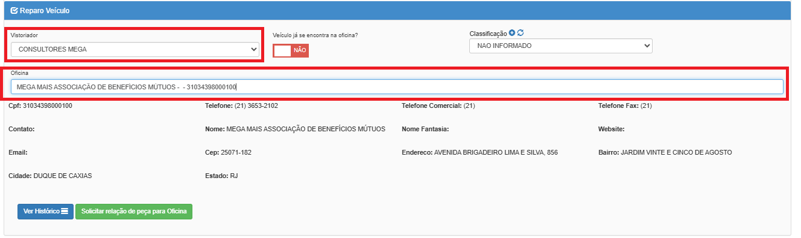
- 7 Seguir para Custo de Evento: em Tipo Participação, selecionar Calcular Porcentagem % Sobre Valor FIPE. Algumas informações irão preencher automaticamente.
- 7.1 Em Prev. Valor de Reparo, preencher com o valor de 2.000,00
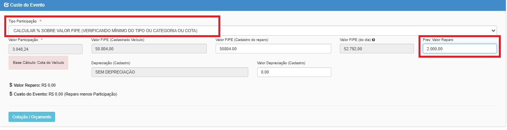
Reparo do veículo do terceiro
- 8 Aba Reparo do Veículo do Terceiro: clicar em Cadastrar Novo. Irá abrir uma página para serem preenchidas as informações do terceiro.
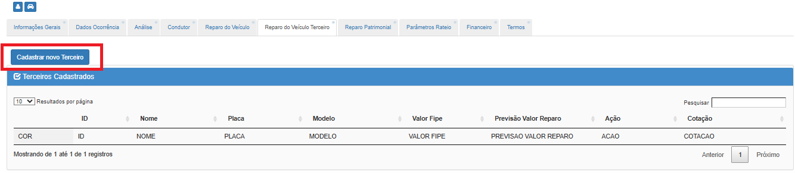
- 8.1 Em Descrição do Evento do Terceiro, preencher com as informações do aviso de evento, ou BRAT/R.O se for diferente do associado
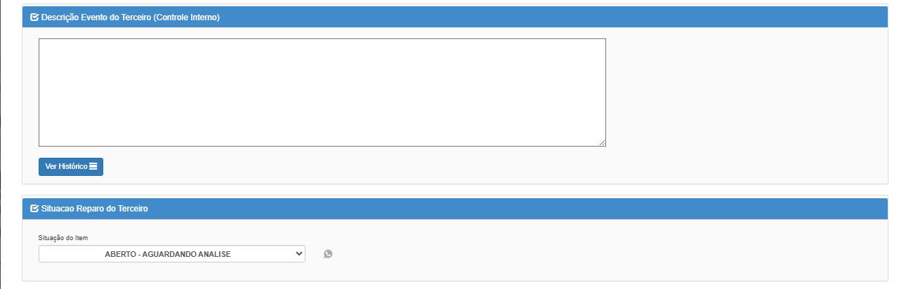
- 8.2 Em Situação do Reparo do Terceiro: no ícone da situação do item, descrever se está Aberto-Aguardando Análise/Acordo Financeiro, etc.
- 8.3 Em Dados do Terceiro, preencher com: nome, data de nascimento, sexo, RG, CPF, CNH, categoria da CNH
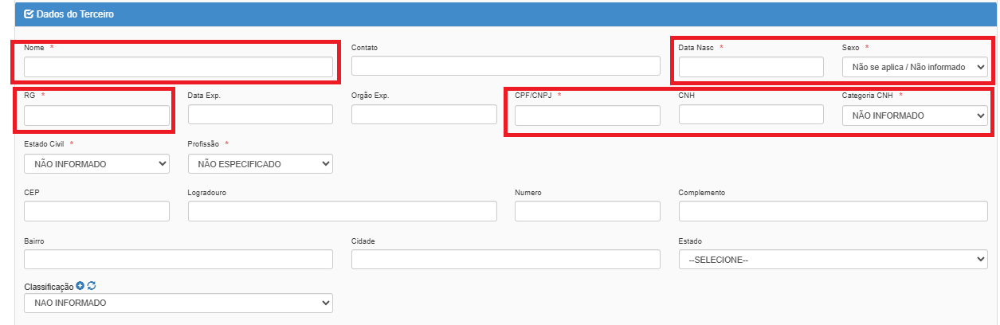
- 9 Dados do Veículo do Terceiro: placa e modelo, montadora e tipo, categoria e ano fabricação/ano modelo, cód. FIPE / valor FIPE, combustível e cor
- 10 Reparo do Veículo Terceiro: em Vistoriador, clicar no ícone e selecionar Consultores Mega, e em Oficina escrever "Mega" e selecionar Mega Mais Associação de Benefícios Mútuos
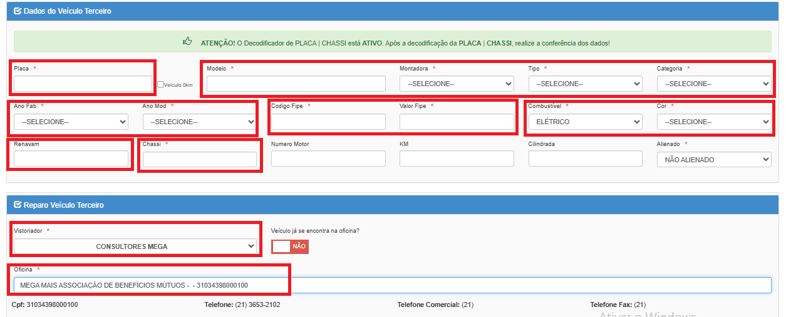
- 11 Custo do Evento Terceiro: em Prev. Valor de Reparo, preencher com o valor de 2.000,00, e clicar em Cadastrar Reparo Veículo do Terceiro
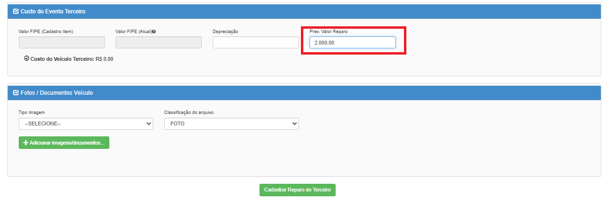
O cadastro completo passa por: informações gerais → dados da ocorrência (B.O) → local e descrição → condutor → reparo do veículo (vistoriador Consultores Mega, oficina Mega Mais, previsão de reparo 2.000,00) → e, se houver terceiro, repetir os mesmos passos na aba de reparo do terceiro.
Acordo Construtivo
Ofertamos quando o processo retornar com a regulagem pronta. O valor do acordo é ofertado com base no levantamento do valor da regulagem.
Para o associado, deduzimos do valor da franquia e ofertamos, pois o associado ao aceitar o valor do acordo não irá pagar o valor da franquia — e retiramos mais uma porcentagem para iniciarmos num valor mais baixo inicialmente para negociação.
Script do Acordo Construtivo
"Boa tarde, Sr. ...! Falo do setor de eventos da Mega Associação. Tudo bem? O motivo do contato é para realizar a proposta de uma oferta no valor de R$ 0.000,00, com base no orçamento feito do seu veículo, para que o senhor tenha a opção de realizar os reparos em uma oficina de sua preferência."
"Será encaminhado um termo de acordo, no qual será necessário preencher e autenticar firma e nos entregar em nossa matriz. Esse valor é transferido em 07/15 dias úteis a partir do recebimento do documento. E nos envie junto um comprovante bancário dessa conta. Pode ser um extrato que apareça conta e agência, ou print da tela do aplicativo, caso tenha."
São dois modelos de acordo construtivo
- 1 Quem recebe o acordo é o proprietário do veículo, onde o mesmo assina o termo pelo GOV.BR ou autentica firma em cartório
- 2 Quem recebe é o associado ou terceiro, porém não é o proprietário do veículo. Será necessário que o proprietário autentique juntamente com associado ou terceiro
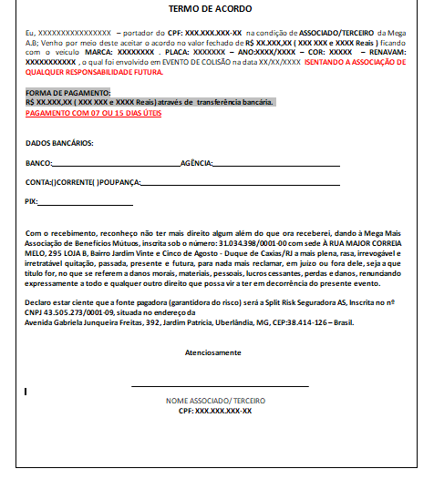
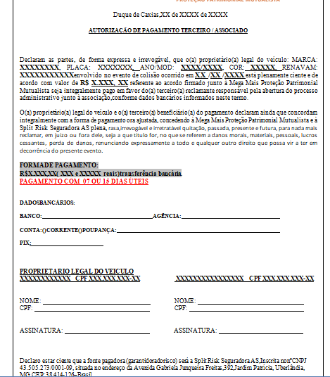
O acordo construtivo troca a franquia + reparo por um valor único, calculado a partir da regulagem com um desconto inicial de negociação. Tem dois modelos de termo conforme quem recebe é ou não o proprietário do veículo, e o pagamento sai em 7 ou 15 dias úteis após o documento autenticado.
Negociação com Oficinas e Remoção
A negociação com as oficinas é feita de acordo com a regulagem do veículo do associado ou terceiro. A supervisão nos passa uma base de valor inicial para ser negociado por e-mail com a oficina. Esse valor é deduzido de uma porcentagem para iniciarmos a negociação a partir de um valor mínimo, para assim conseguirmos fechar com o valor da regulagem fechado.
Montando e-mail de negociação
O e-mail é montado a partir do e-mail da regulagem e fazemos poucas alterações. Substituímos "SOLICITAÇÃO DE REGULAGEM" por "NEGOCIAÇÃO DE ORÇAMENTO" e acrescentamos o valor da negociação.
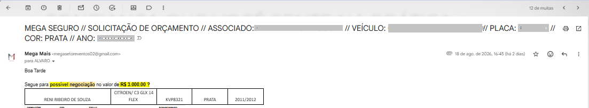
Cortamos da regulagem o código das peças, retomamos a regulagem até oficina e acrescentamos no corpo do e-mail.
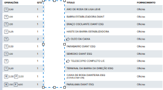
Baixamos todas as fotos da regulagem, fazemos a extração do zip e anexamos no e-mail.
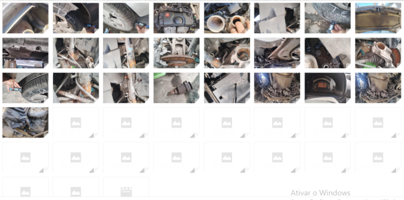
Aguardamos o retorno da oficina. Caso ela peça um valor alternativo, mantemos a negociação até chegar num acordo com valor de regulagem. Caso seja aceito, entramos em contato com segurado ou terceiro para indicar a oficina.
Indicação da oficina ao segurado
"Boa tarde senhor, XXXXXXXX! O motivo do contato é para indicar a oficina credenciada da MEGA que dará uma atenção melhor ao veículo do senhor para os reparos. OFICINA XXXX XXXX, RUA XXXXXXXXXX, N° XX, BAIRRO XXXXXXXX, CEP: XXXXX-XXX. RESPONSÁVEL: XXXXXXXX (21) XXXXX-XXXX."
Alinhamento de remoção
Entramos em contato com Assistência 24h pelo WhatsApp para saber qual data e horário disponível para remoção do veículo do assegurado. A remoção é feita sempre entre terça e sexta-feira, na parte da manhã entre 08 e 12h ou na parte da tarde entre 13 e 17h.
"Remoção alinhada para sexta-feira XX/XX/XX, pela manhã entre 08h às 12h / pela tarde entre 13h às 17hs. Entregar chave e documento impresso do veículo, ter uma pessoa maior de idade no local para receber o reboque."
E-mail de remoção
Usamos o mesmo e-mail da regulagem e fazemos as alterações para solicitação de remoção, acrescentando data, horário, local onde o veículo se encontra, contato de quem irá receber o reboquista e local de destino (oficina). Enviamos para o e-mail da assistência.
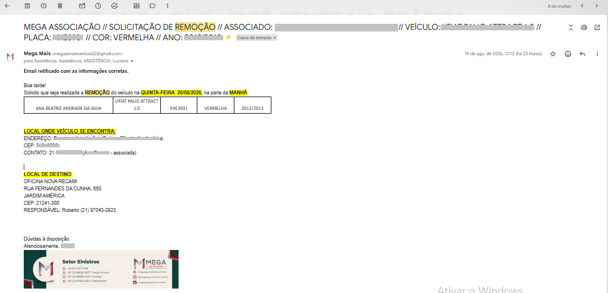
Indicação de oficina (pelo associado ou terceiro)
- ● Tanto assegurado quanto terceiro podem indicar oficina para reparos
- ● Se o veículo estiver na garantia, necessário que seja enviado o contato da autorizada
- ● A oficina indicada deve conter CNPJ ativo e emitir nota fiscal
- ● Ao indicar a oficina, necessário que ela nos envie o orçamento do veículo para negociação, ou aceite nosso orçamento
- ● Ao fechar o acordo, a oficina precisa mandar os dados bancários (conta, agência, banco, tipo de conta, titularidade e chave PIX)
- ● O associado/terceiro precisa assinar o termo de responsabilidade de indicação de oficina e nos enviar
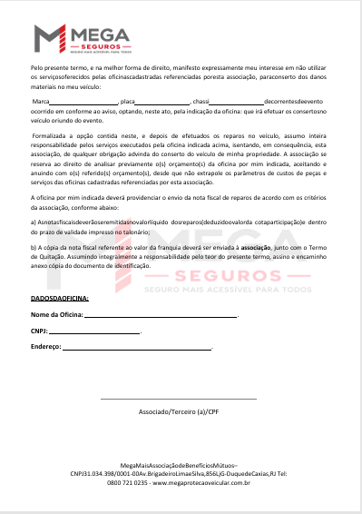
A negociação parte de um valor-base com desconto para margem, é feita por e-mail (adaptado do e-mail de regulagem, sem anexar a regulagem inteira), e termina com a indicação da oficina, alinhamento de remoção com a Assistência 24h e, se for indicação externa, o termo de responsabilidade assinado.
Conferência de Documentações Recepcionadas
Os documentos são recepcionados via e-mail e conferidos para cadastro no sistema. Em casos de pendência ou correção documental, sempre retornar para segurado e terceiro para fazer a cobrança.
Ordem de conferência
- ● Formulários Mega Aviso de Sinistro de Associado (assinado) e/ou de Terceiro (assinado)
- ● CNH aberta do associado/terceiro e/ou do condutor
- ● CRLV aberto
- ● Documento de identificação do proprietário do veículo. Caso esteja no nome de um proprietário sem mais contato, pedir o documento de compra e venda do veículo.
- ● E-Brat deferido (arquivo completo) / DAT (arquivo completo) / R.O em caso de vítimas e polícia no local
- ● Fotos panorâmicas do veículo, fotos do local do acidente se houver e vídeos
- ● Carta próprio punho (caso passe de 15 dias, informando o motivo pela demora em acionar a Mega)
- ● BAM (boletim de atendimento médico) — caso a vítima tenha sido levada para o hospital
Documentos de garantia do veículo associado
- ● Nota fiscal da compra do veículo
- ● Manual de garantia
- ● Revisões
- ● Foto do painel ligado do veículo
Para alagamento, incêndio e fenômenos da natureza
- ● Formulários Mega (Aviso de Evento de Associado e Termo de Entrega de Documentos de Associado, em anexo)
- ● Cópia da CNH associado/condutor
- ● Cópia do CRLV
- ● Carta a próprio punho com firma reconhecida ou assinado pelo GOV
- ● Fotos panorâmicas do veículo, fotos do local do acidente se houver e vídeos
A conferência segue sempre a mesma ordem — formulário assinado, CNH, CRLV, identificação do proprietário, boletim/laudo, fotos e carta a próprio punho se atrasado — com uma lista específica adicional para casos de garantia e para alagamento/incêndio/fenômenos da natureza.
Como Responder os E-mails
Autorização Inicial
É recepcionado quando o valor de reparos é acordado com a oficina para qual o veículo será reparado. Observamos qual é a oficina, copiamos o título do e-mail e enviamos no WhatsApp dela: "Boa tarde! Seguiu para o email: MEGA SEGUROS // NEGOCIAÇÃO DE ORÇAMENTO // ASSOCIADO: XXXXXX XXXXX // VEÍCULO: XXXXX/ XXXXXXXX // PLACA: XXXXXXX// COR: XXXXXX // ANO: 20XX/20XX". E respondemos no e-mail: "Boa Tarde! Oficina ciente."
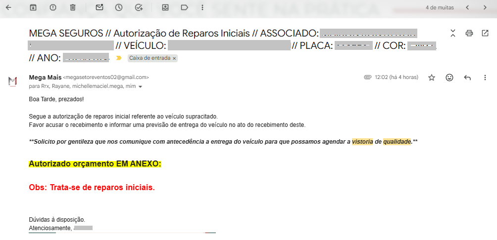
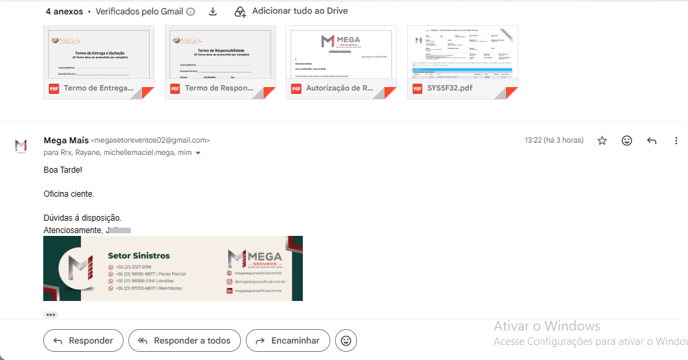
Acordo Construtivo e Autorização de Pagamento de Oficina
Quando é feito o pagamento para a oficina referente ao valor dos reparos, sendo 50% inicial (adiantamento), 50% restante, ou pagamento total no fim dos reparos.
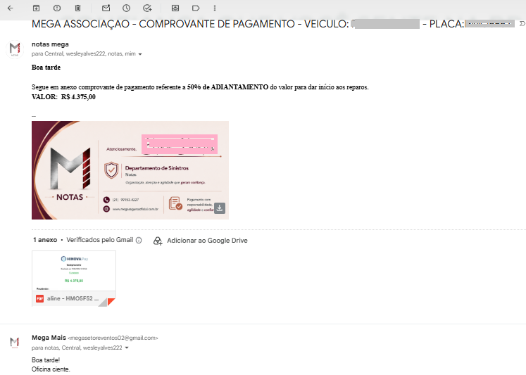
Notificamos a oficina pelo WhatsApp: "Bom dia. Seguiu para email: MEGA ASSOCIAÇÃO - COMPROVANTE DE PAGAMENTO - VEÍCULO: XXXXX/XXX - PLACA: XXXXXXX." E respondemos o e-mail: "Boa tarde! Oficina ciente."
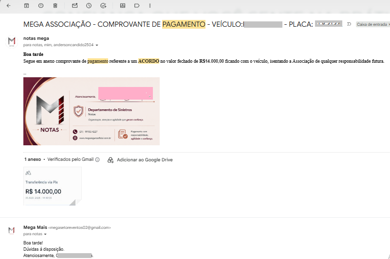
Duas respostas-padrão cobrem quase tudo: avisar a oficina no WhatsApp que "seguiu para e-mail" com o título copiado, e responder o e-mail apenas com "oficina ciente" — tanto para autorização inicial quanto para comprovantes de pagamento.
Login e Senha do Rastreador / Assistência 24h
Login e senha
Quando a Análise e Reembolso solicitam o login e senha para acompanhar o rastreador do segurado em casos de sinistro, notificamos o subsetor responsável — que irá responder ao pedido.
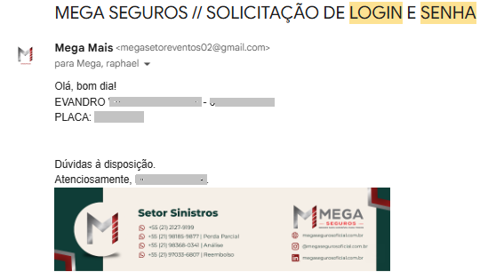
E-mail Assistência 24h
Recebemos o e-mail da Assistência para informações de sinistros. Pesquisamos o CPF do segurado no sistema do SGA e colocamos na planilha de atendimento para que uma colaboradora entre em contato para saber se esse segurado dará entrada para reparos. Respondemos o e-mail como "ciente".
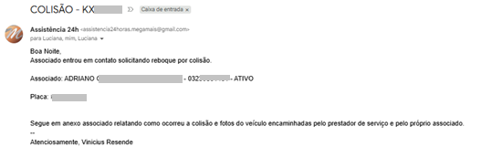
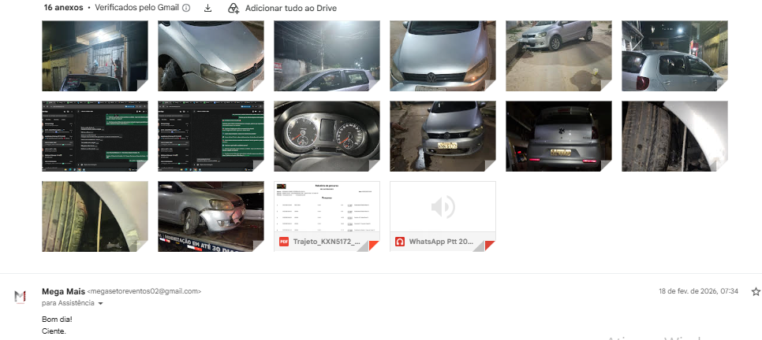
Login/senha do rastreador é repassado ao subsetor responsável. Todo e-mail da Assistência 24h gera uma pesquisa por CPF, entra na planilha de atendimento para distribuição, e é respondido com um simples "ciente".
Vistorias de Qualidade e Constatação
Vistoria de Qualidade
Quando os reparos do veículo terminam, a oficina entra em contato para informar e pede que o regulador que ficou responsável pela regulagem do veículo vá verificar se esse se encontra apto para entrega.
Copiamos o e-mail da regulagem, baixamos as imagens e regulagem para anexar no e-mail, observamos se teve alguma ressalva complementar para anexar no corpo do e-mail e acrescentamos qual oficina o veículo se encontra.
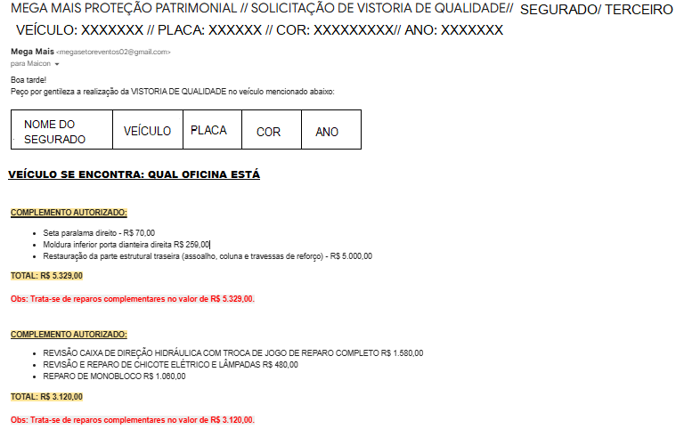
Vistoria de Constatação
Normalmente quando existe algum apontamento através de reclamação do segurado ou terceiro, é feita a vistoria de constatação para verificar se aquela reclamação é proveniente do evento ou não.
Recepcionamos essa reclamação através do WhatsApp, pois precisamos que os apontamentos sejam digitalizados, imprimimos e anexamos a reclamação ao processo do segurado ou terceiro que está fazendo os apontamentos, entramos em contato com a oficina passando a reclamação e verificamos com o segurado ou terceiro para encostar o veículo no melhor dia e horário.
Vistoria de qualidade confirma que o reparo terminou certo antes da entrega; vistoria de constatação verifica se uma reclamação do cliente realmente é decorrente do evento — ambas passam pelo regulador e ficam registradas na planilha de atendimento/reclamação da Split.
Vidro, Lanternas, Retrovisores e Faróis
O segurado entra em contato via WhatsApp, chatbot ou ligação fazendo a solicitação. Recepcionamos o CPF do segurado e verificamos se ele possui cobertura para a solicitação. Possuindo, pedimos que confirme um e-mail para ser enviado o procedimento.
Troca de Vidro
E anexamos o formulário de troca de vidro.
Quando a colaboradora responsável envia a autorização para o segurado, chega um e-mail em cópia para o setor informando a autorização. Respondemos apenas "ciente".
Reembolso de Lanternas, Retrovisores e Faróis
E anexamos o formulário de reembolso.
Quando a colaboradora responsável envia a autorização para o segurado, chega um e-mail em cópia para o setor informando a autorização. Respondemos apenas "ciente".
Vidro e lanternas/retrovisores/faróis seguem o mesmo fluxo: confirma cobertura pelo CPF, envia e-mail padrão com formulário anexo, e quando a autorização sai (cópia pro setor), a resposta é só "ciente".
Perícia Técnica e Ressalva Complementar
Perícia Técnica
Quando retorna e-mail de perícia técnica de incêndio ou alagamento, verificamos qual colaboradora fez a solicitação, recepcionamos o documento que vem em anexo e imprimimos, fazemos o histórico de recepção e entrega e entregamos para a responsável pelo processo.
Ressalva Complementar
Quando a oficina apresenta um complemento de avaria no veículo além do acordado mediante negociação.
- 1 Recepcionamos o pedido via e-mail
- 2 Anexamos ao processo
- 3 Apresentamos para supervisão analisar
Sendo deferido, a ressalva segue para autorização e o e-mail formal é enviado para a oficina.
Respondemos da seguinte forma: copiamos o título e enviamos no WhatsApp para oficina: "Bom dia! / Boa tarde! Seguiu para email: MEGA MAIS PROTEÇÃO PATRIMONIAL // Autorização de reparos complementares // SEGURADO / TERCEIRO: XXXXXXXXX XXXXXX // VEÍCULO: XXXXX XXXXXX // EVM6E78 // BRANCA // 2011/2012". E respondemos o e-mail: "Bom dia! / Boa tarde! Oficina ciente."
Perícia técnica: documento recepcionado, impresso, com histórico de recepção/entrega para a responsável. Ressalva complementar: pedido da oficina vai para supervisão aprovar e, se deferido, vira autorização formal com aviso padrão no WhatsApp e "oficina ciente" no e-mail.
Ação de Regresso e Notificação Extrajudicial
Ação de Regresso
Acontece quando o seguro do terceiro ou locadora entra em contato cobrando o direito de indenização referente ao valor de perda parcial ou perda total do veículo envolvido no sinistro.
Eles entram em contato diretamente com o segurado e fazemos a tratativa, ou pelos canais de WhatsApp e e-mail. Quando entrar em contato pelo segurado ou WhatsApp, pedimos o contato da instituição e que nos envie os documentos do acionamento pelo e-mail.
Após o envio e toda a conferência, pedimos os dados bancários e agendamos uma data de previsão para pagamento.
Observamos qual é o tipo de cobertura que o segurado tem para terceiro: 20 mil, 30 mil, 40 mil ou 50 mil. Esse valor será deduzido de acordo com o valor de pleito. Caso o valor do pleito seja superior ao valor da cobertura para terceiro, fechamos com o valor máximo e a diferença fica por conta de ser negociada diretamente com o segurado.
Notificação Extrajudicial
Quando segurado ou terceiro, por algum motivo, se recusa a algum procedimento específico e se torna necessária uma notificação diretamente do jurídico.
Entramos em contato com o jurídico pelo e-mail explicando a situação, com dados de segurado ou terceiro, data do sinistro e dados do veículo, e aguardamos o retorno. Com o retorno, pedimos que o jurídico envie a notificação para o segurado ou terceiro, recepcionamos o documento, fazemos o histórico no Hinova.
Título: "MEGA SEGUROS // SOLICITAÇÃO DE NOTIFICAÇÃO EXTRAJUDICIAL // SEGURADO/ TERCEIRO: XXXXXXX XXXXX // VEÍCULO: XXXXXXXXX // PLACA: XXXXXXX // COR: XXXXX // ANO: XXXX/XXXX"
"Prezados, Solicito, por gentileza, a emissão de Notificação Extrajudicial à associada, considerando que no dia referido XX/XX/XXX, do segurado/terceiro, sobre a situação XXXXXXXXXX. Apresentando a referente situação XXXXX..."
Ação de regresso: cobrança de terceiro/locadora, sempre respeitando o teto de cobertura contratado (a diferença acima do teto é do segurado). Notificação extrajudicial: usada quando há recusa de procedimento, acionando o jurídico por e-mail com todos os dados do sinistro.